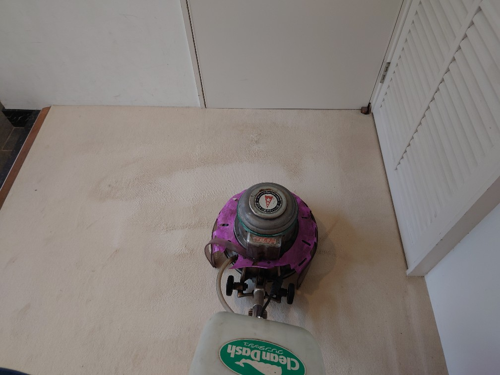
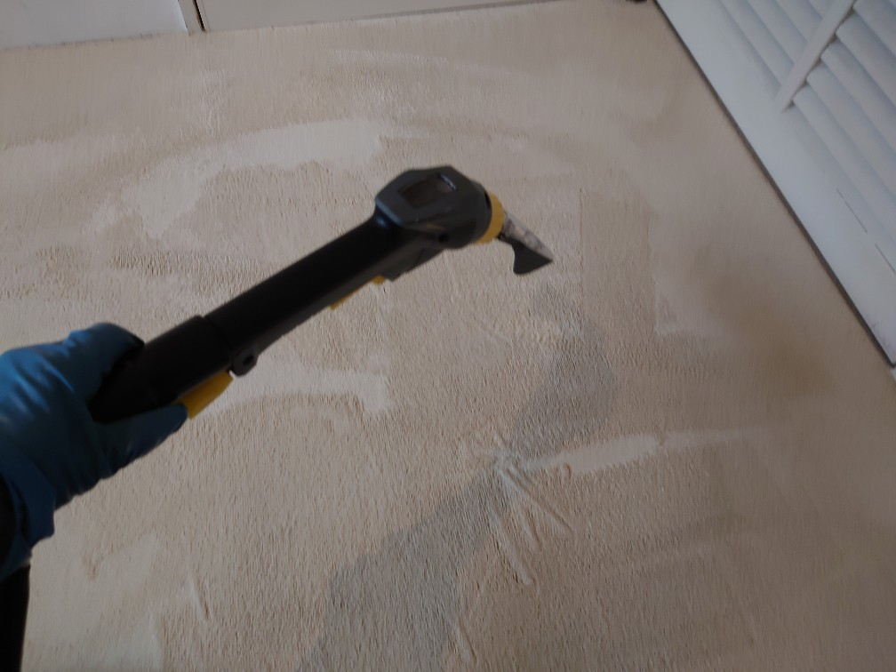
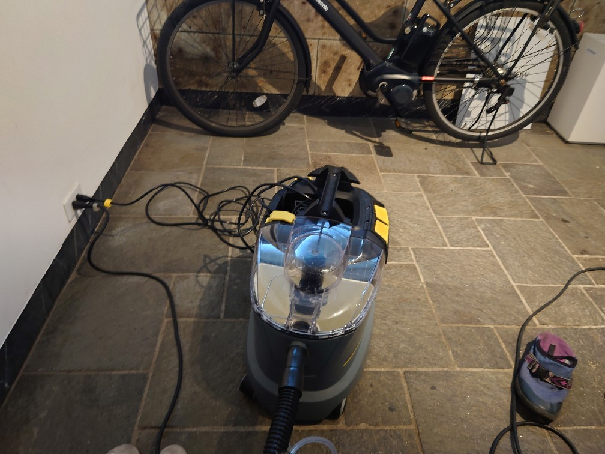
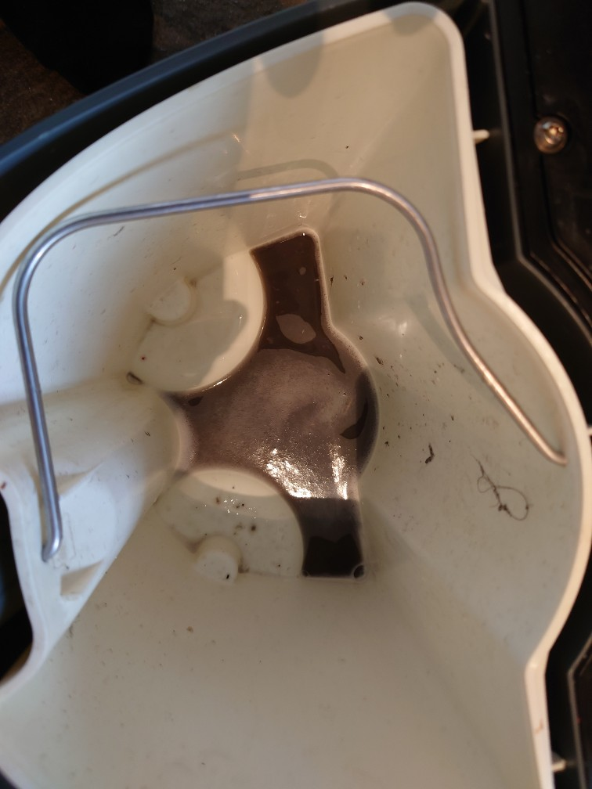
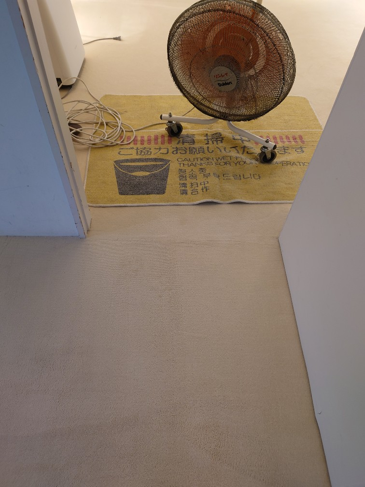

広尾のお客様、カーペットに紅茶をこぼされた跡をクリーニングして綺麗になりました!

東京広尾（渋谷区）のお客様、玄関先カーペットに紅茶をこぼされたとの事でお困りでした。紅茶の染みは手強いタイプですので、ドイツ製専用薬剤（汚れをカプセル化して閉じ込める）を用いて、カーペット専用パッドで丁寧に繰り返しポリッシャー洗浄を実施して、これもドイツ製カーペット専用リンサー機器で強力にカプセル化したシミ汚れをバキューム除去しました。ご覧の通りとても綺麗になりました!良かったです!カーペットクリーニングは、DAIZENプロフェッショナルカーペットクリーニングメソッドにお任せください、宜しくお願いいたします!




